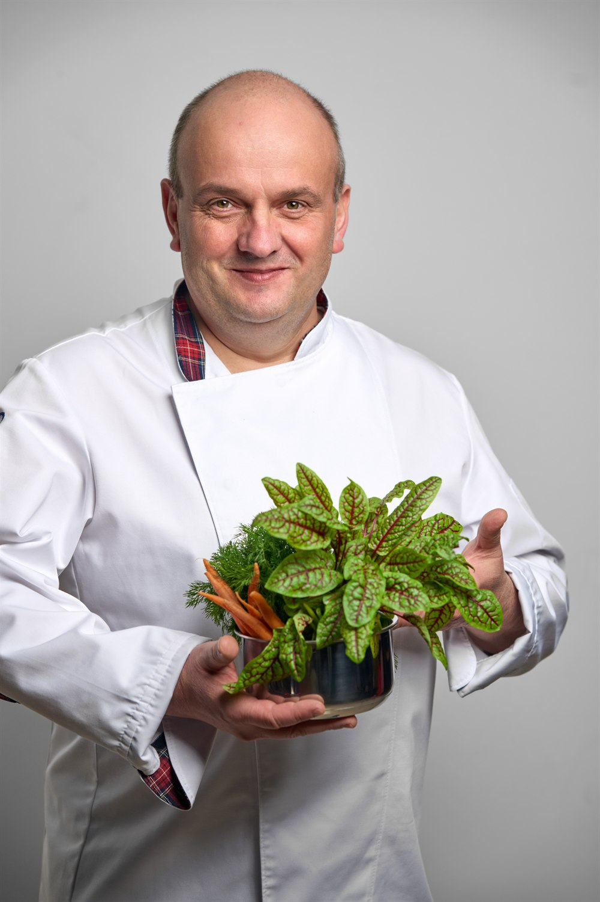

Witamy w restauracji Aura
Restauracja Aura to wyjątkowe miejsce na kulinarnej mapie ostrowskiego rynku, w którym gościmy Was już 4. rok. Stworzone na bazie doświadczeń i pasji do tworzenia oraz serwowania jedzenia od ponad 30 lat.
Drodzy Goście, proponujemy Wam nowoczesną odsłonę kuchni polskiej, ale także dania kuchni europejskiej, wegańskiej i wegetariańskiej.
Możecie spędzić w Aurze cały dzień… zaczynając śniadaniem i kończąc kolacją.
Aura to miejsce, w którym dobrze zjesz, miło spędzisz czas z przyjaciółmi i rodziną, we wnętrzach, w których poczujesz spokój, radość i relaks. Miło nam będzie Was gościć!
Od trzech dekad z miłością i ogromną radością prowadzimy kuchnię dla mieszkańców Ostrowa i nie tylko! Lata doświadczenia, profesjonalny zespół i zamiłowanie do gotowania (i pieczenia!) przyczyniły się do stworzenia silnej marki na mapie Ostrowa. Prawdopodobnie każdy mieszkaniec Ostrowa zna Bistro Bravo (i prawie każdy jego kuchnię lub słynne ciasta). Dziękujemy za zaufanie i za to, że wspólnie z nami, codzień tworzycie tę AURĘ.

Szef kuchni
Za naszą kartą menu stoi szef kuchni Roman Wegnerowicz i wspierający go zespół doświadczonych kucharzy.
Roman bardzo wcześnie odkrył przyjemność w tworzeniu smaków i cel swojego życia w dzieleniu się nimi. Dzięki ciągłemu poszukiwaniu, ciekawości, obserwowaniu trendów i światowych kucharzy od lat z powodzeniem tworzy wspaniałe dania.
„Ludzie, którzy kochają jeść, są zawsze najlepszymi ludźmi”
Zamów w dostawie
Kariera
Prowadzimy dwie popularne i uzupełniające się restauracje w samym sercu Ostrowa Wielkopolskiego – Restaurację Aura (Rynek 21) oraz Bistro Bravo (Rynek 15). Dzieli nas zaledwie 50 metrów spacerem przy Rynku, co daje ogromną wygodę i pozwala na świetną współpracę obu zespołów. Szukamy ludzi z pasją, dobrą energią i uśmiechem, którzy chcą wspólnie z nami tworzyć wyjątkowe kulinarne doświadczenia.
Manager / Managerka
🍴 Kim jesteśmy? Dwie restauracje przy jednym Rynku
Prowadzimy dwie popularne i uzupełniające się restauracje w samym sercu Ostrowa Wielkopolskiego. Dzieli nas zaledwie 50 metrów spacerem przy Rynku, co daje ogromną wygodę i pozwala na świetną współpracę obu zespołów:
- Bistro Bravo (Rynek 15): miejsce z ponad 30-letnią tradycją, dynamicznym ruchem w ciągu dnia, lubianą kuchnią casual (pizza, makarony, dania obiadowe) i rzeszą stałych, uśmiechniętych gości.
- Restauracja Aura (Rynek 21): nowoczesna, elegancka restauracja z autorską kuchnią, przeszkloną pergolą, dopracowaną kartą dań, cocktail barem oraz przyjęciami okolicznościowymi i biznesowymi.
Szukamy zaangażowanego lidera z Ostrowa lub okolic, który obejmie całościową opieką bieżące funkcjonowanie obu restauracji, wesprze nasze zespoły i zadba o doskonałe doświadczenia gości.
📋 Czym będziesz się zajmować? (Zakres zadań)
- Koordynacja pracy restauracji: bieżący nadzór nad salą, barem i płynną współpracą z szefami kuchni w obu lokalach.
- Wsparcie i budowanie zespołu: rekrutacja, wdrażanie nowych osób, szkolenia ze standardów gościnności i dbanie o dobrą, motywującą atmosferę.
- Sprytne planowanie grafików: wykorzystanie odległości 50 metrów między lokalami do elastycznych zastępstw i optymalnej obsady w godzinach szczytu.
- Kontrola kosztów i magazyn: nadzór nad zamówieniami, dostawami, okresowymi inwentaryzacjami i relacjami z dostawcami.
- Dbałość o jakość i standardy: czuwanie nad nienaganną czystością, powtarzalnym smakiem dań i przestrzeganiem zasad higieny.
- Sprzedaż i rezerwacje: opieka nad rezerwacjami grupowymi, przyjęciami okolicznościowymi oraz wprowadzanie pomysłów na rozwój oferty.
🎯 Czego oczekujemy? (Doświadczenie i kompetencje)
- Doświadczenie managerskie: 3–5 lat doświadczenia na stanowisku kierowniczym w gastronomii LUB doświadczenie zarządcze w innej branży (jeśli masz talent do ludzi, organizacji i liczb, chętnie i profesjonalnie przyuczymy Cię do specyfiki gastronomii!).
- Zrozumienie kosztów (Prime Cost): świadomość wpływu kosztów surowca (food cost) i pracy (labor cost) na wynik lokalu oraz dążenie do utrzymania ich sumy na zdrowym poziomie ok. 55–60% przychodu.
- Wyczucie w układaniu menu (Menu Engineering): umiejętność oceny dań pod kątem ich popularności i marżowości (rozróżnianie pozycji budujących marżę od tych napędzających obrót).
- Podstawy procedur higienicznych: znajomość standardów czystości, zasad HACCP, bezpiecznego przechowywania i rotacji surowców (FIFO).
- Partnerskie przywództwo: zarządzanie poprzez współpracę z kierownikami zmian i personelem – szukamy osoby organizującej procesy, a nie gaszącej pożary na sali.
- Sprawność organizacyjna: podstawowa znajomość arkusza Excel, systemów sprzedaży POS (lub chęć ich szybkiego opanowania) oraz wysoka kultura osobista.
💎 Co oferujemy w zamian? (Warunki i benefity)
- Stabilną podstawę: 8 000 – 11 000 zł brutto (umowa o pracę) lub 8 000 – 11 000 zł netto + VAT (kontrakt B2B), dopasowane do Twoich kompetencji.
- Comiesięczną premię za wyniki: motywujący system premiowy – ok. 20% wynagrodzenia co miesiąc za realizację uzgodnionych celów operacyjnych i sprzedażowych.
- Zwrot kosztów dojazdu: jeśli dojeżdżasz z okolic Ostrowa Wielkopolskiego, zapewniamy dodatek lub pełny zwrot kosztów paliwa / dojazdów.
- Komfort 50 metrów: obie restauracje są na Rynku – brak uciążliwych dojazdów między odległymi punktami miasta.
- Realny wpływ i decyzyjność: otwartość na Twoje pomysły, duża autonomia oraz partnerskie relacje bezpośrednio z właścicielami.
- Dodatki codzienne: narzędzia pracy (laptop, telefon), smaczne posiłki pracownicze (staff meals) oraz zniżki w obu restauracjach.
🏡 Dla osób z dalszych stron: pakiet relokacyjny na start
Rozważasz przeprowadzkę do Ostrowa Wielkopolskiego? Zadbamy o Ciebie! Choć w pierwszej kolejności zapraszamy osoby z regionu, jesteśmy w pełni otwarci na świetnych kandydatów z całej Polski. Jeśli zdecydujesz się na relokację, zapewniamy:
- comiesięczną dopłatę do wynajmu mieszkania w Ostrowie,
- osobistą pomoc w znalezieniu komfortowego lokum i formalnościach,
- elastyczny czas na spokojną przeprowadzkę i ciepłe wsparcie na start w nowym mieście.
📬 Porozmawiajmy! Jak aplikować?
Prześlij swoje CV z dopiskiem w tytule: „Manager – Bistro Bravo i Aura”
*Prosimy o dopisanie standardowej klauzuli RODO o zgodzie na przetwarzanie danych osobowych.
Kelner / Kelnerka
🍴 Dołącz do naszego zespołu gościnności!
Szukamy serdecznych, uśmiechniętych osób z 1–3 letnim doświadczeniem w obsłudze gości, które lubią pracę z ludźmi i chcą współtworzyć wyjątkową atmosferę w naszych lokalach przy ostrowskim Rynku.
📋 Czym będziesz się zajmować? (Zakres zadań)
- Serdeczna gościnność: dbanie o to, by każdy gość czuł się zaopiekowany od momentu przekroczenia progu restauracji.
- Doradztwo i rekomendacje: z uśmiechem opowiadasz o naszych autorskich daniach, winach i koktajlach.
- Sprawny serwis: przyjmowanie zamówień, płynna współpraca z kuchnią i barem, serwowanie potraw i napojów.
- Estetyka sali (mise en place): dbałość o czystość, przygotowanie stolików, szkieł i zastawy.
- Obsługa systemów POS: rozliczanie rachunków i profesjonalna obsługa płatności.
🎯 Czego oczekujemy?
- Doświadczenie: 1–3 lata doświadczenia na stanowisku kelnera / kelnerki w gastronomii (mile widziane w restauracji à la carte).
- Pozytywne nastawienie: wysoka kultura osobista, naturalna życzliwość i uśmiech, który nie znika w godzinach szczytu.
- Gra zespołowa: umiejętność współpracy, wzajemnego wspierania się w zespole i punktualność.
- Otwartość na naukę: chęć poznawania karty menu, składników dań, win i technik serwisu.
- Dyspozycyjność: gotowość do pracy w systemie zmianowym (w tym w weekendy i wieczory).
💎 Co oferujemy w zamian?
- Atrakcyjne wynagrodzenie: 21 – 28 zł netto/h (stawka zależna od Twojego doświadczenia, umiejętności i zaangażowania) + bardzo dobre codzienne napiwki.
- Stabilność i elastyczność: umowa dopasowana do Twojej sytuacji (zlecenie lub umowa o pracę), elastyczny grafik ustalany z wyprzedzeniem.
- Wygoda 50 metrów: obie restauracje w centrum Rynku – praca w zgranym, pomocnym zespole bez niepotrzebnego stresu.
- Codzienne dodatki: pyszne posiłki pracownicze (staff meals), zniżki na kartę menu w obu lokalach i profesjonalne szkolenia.
- Rozwój zawodowy: możliwość awansu na starszego kelnera lub kierownika zmiany.
📬 Dołącz do nas! Jak aplikować?
Prześlij CV na adres e-mail z dopiskiem: „Kelner / Kelnerka – Aura i Bistro Bravo”
*Prosimy o dopisanie standardowej klauzuli RODO.
Kucharz / Kucharka
🍴 Gotuj z pasją w Restauracji Aura
Za naszą autorską kartą menu stoi szef kuchni Roman Wegnerowicz. Tworzymy nowoczesną odsłonę kuchni polskiej i europejskiej, opartą na świeżych, najwyższej jakości produktach i pasji do smaku. Szukamy kucharza/kucharki, który/a chce wspólnie z nami tworzyć dania, o których pamięta się na długo.
📋 Czym będziesz się zajmować? (Zakres zadań)
- Przygotowywanie potraw: realizacja dań z karty à la carte, menu sezonowego oraz przyjęć z dbałością o powtarzalny, wyśmienity smak i estetykę wydawki.
- Praca w sekcjach: samodzielne prowadzenie powierzonej sekcji (dania ciepłe / zimne / desery) w zgranej brygadzie kuchennej.
- Jakość i świeżość: kontrola jakości surowców, prawidłowe przechowywanie zgodne z zasadą FIFO oraz przestrzeganie standardów HACCP.
- Czystość i organizacja: utrzymanie nienagannej czystości na stanowisku pracy i dbałość o profesjonalny sprzęt kuchenny.
🎯 Czego oczekujemy?
- Doświadczenie: udokumentowane doświadczenie na stanowisku kucharza / kucharki w restauracji z kuchnią à la carte.
- Pasja do kulinariów: szacunek do produktu, ciekawość nowych technik i zmysł estetyczny przy układaniu talerza.
- Świetna organizacja: dobra organizacja pracy własnej, opanowanie w godzinach szczytu i dbałość o czystość.
- Zaangażowanie i odpowiedzialność: rzetelność, punktualność i wysoka kultura pracy.
- Umiejętność pracy w zespole: dobra komunikacja i wzajemne wsparcie w kuchennym teamie.
💎 Co oferujemy w zamian?
- Atrakcyjne wynagrodzenie: stabilne zarobki adekwatne do Twoich umiejętności, zaangażowania i doświadczenia.
- Stabilne zatrudnienie: pewna praca na pełny etat w rozwijającej się, cenionej restauracji.
- Przejrzysty grafik: elastyczny grafik planowany z wyprzedzeniem, gwarantujący czas na odpoczynek.
- Świetna atmosfera: praca w zgranym, pomocnym zespole pod okiem doświadczonego Szefa Kuchni Romana Wegnerowicza.
- Rozwój zawodowy: możliwość doskonalenia technik kulinarnych i pracy na nowoczesnym sprzęcie gastronomicznym.
- Posiłki pracownicze: pełne wyżywienie w trakcie pracy oraz zniżki pracownicze.
📬 Jak aplikować?
Prześlij swoje CV lub zadzwoń bezpośrednio:
*Prosimy o dopisanie standardowej klauzuli RODO.